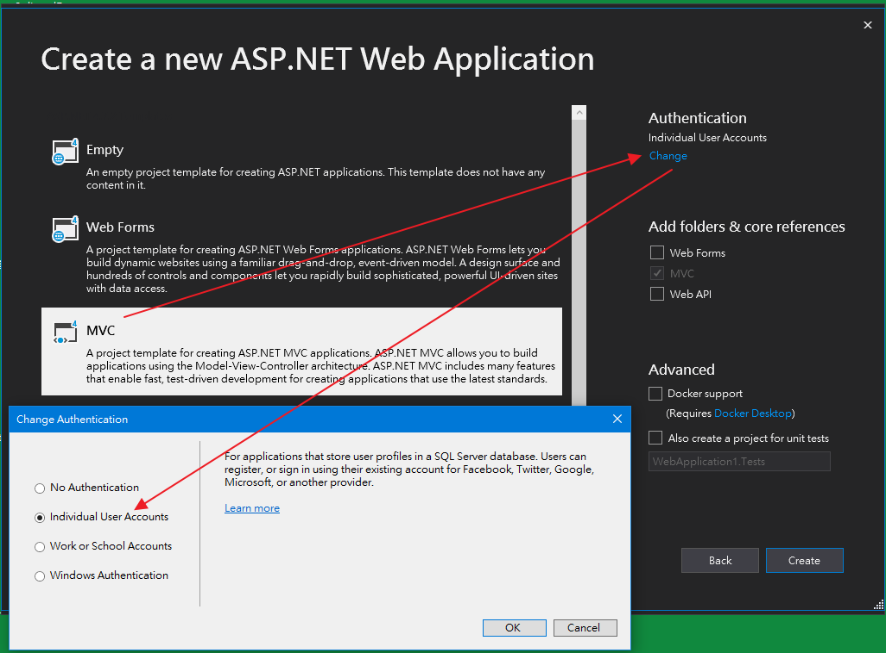
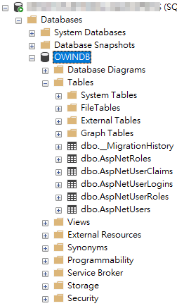

開一個預設的 ASP.NET MVC (individual User Accounts) 範本，
就有提供 ASP.NET Identity 架構可玩玩。

把專案 RUN 起來，然後在 Login 頁面的欄位隨意填入並登入，

此動作當然會登入失敗，不過醉翁之意不在酒，
其目的是程式會藉由此動作來自動建立資料庫，
我想這應該是 code first 關係。
所產生的資料庫如下圖。

各 Table 用途請參考 MVC會員資料表
經由web.config去查詢連線字串去看資料庫長在哪裡
<connectionStrings>
<add name="DefaultConnection" connectionString="Data Source=(LocalDb)\MSSQLLocalDB;AttachDbFilename=|DataDirectory|\aspnet-LearnningASP.NET_Identity-20150525080608.mdf;Initial Catalog=aspnet-LearnningASP.NET_Identity-20150525080608;Integrated Security=True"
providerName="System.Data.SqlClient" />
</connectionStrings>
由上可知他是連到 (LocalDb)\MSSQLLocalDB 執行個體，這是 SQL Server 2014 Express LocalDB，
SQL Server 2014 Express LocalDB 以後的版本皆為 (LocalDb)\MSSQLLocalDB 執行個體。
而 SQL Server 2012 Express LocalDB 則為 (LocalDb)\v11.0 執行個體。
有人表示安裝 Visual studio 2013 其範本 web.config 預設為 (LocalDb)\v11.0，
而安裝 Visual studio 2015 以後其範本 web.config 預設為 (LocalDb)\MSSQLLocalDB，
雖然我不確定是否如此，不過我想實際應該就是這樣吧，參考參考。
部份程式重點與功能
一、Startup.Auth.cs
using System;
using Microsoft.AspNet.Identity;
using Microsoft.AspNet.Identity.Owin;
using Microsoft.Owin;
using Microsoft.Owin.Security.Cookies;
using Microsoft.Owin.Security.Google;
using Owin;
using WebApplication1.Models;
namespace WebApplication1
{
public partial class Startup
{
// For more information on configuring authentication, please visit https://go.microsoft.com/fwlink/?LinkId=301864
public void ConfigureAuth(IAppBuilder app)
{
// Configure the db context, user manager and signin manager to use a single instance per request
app.CreatePerOwinContext(ApplicationDbContext.Create);
app.CreatePerOwinContext<ApplicationUserManager>(ApplicationUserManager.Create);
app.CreatePerOwinContext<ApplicationSignInManager>(ApplicationSignInManager.Create);
// Enable the application to use a cookie to store information for the signed in user
// and to use a cookie to temporarily store information about a user logging in with a third party login provider
// Configure the sign in cookie
app.UseCookieAuthentication(new CookieAuthenticationOptions
{
AuthenticationType = DefaultAuthenticationTypes.ApplicationCookie,
LoginPath = new PathString("/Account/Login"),
Provider = new CookieAuthenticationProvider
{
// Enables the application to validate the security stamp when the user logs in.
// This is a security feature which is used when you change a password or add an external login to your account.
OnValidateIdentity = SecurityStampValidator.OnValidateIdentity<ApplicationUserManager, ApplicationUser>(
validateInterval: TimeSpan.FromMinutes(30),
regenerateIdentity: (manager, user) => user.GenerateUserIdentityAsync(manager))
}
});
app.UseExternalSignInCookie(DefaultAuthenticationTypes.ExternalCookie);
// Enables the application to temporarily store user information when they are verifying the second factor in the two-factor authentication process.
app.UseTwoFactorSignInCookie(DefaultAuthenticationTypes.TwoFactorCookie, TimeSpan.FromMinutes(5));
// Enables the application to remember the second login verification factor such as phone or email.
// Once you check this option, your second step of verification during the login process will be remembered on the device where you logged in from.
// This is similar to the RememberMe option when you log in.
app.UseTwoFactorRememberBrowserCookie(DefaultAuthenticationTypes.TwoFactorRememberBrowserCookie);
// Uncomment the following lines to enable logging in with third party login providers
//app.UseMicrosoftAccountAuthentication(
// clientId: "",
// clientSecret: "");
//app.UseTwitterAuthentication(
// consumerKey: "",
// consumerSecret: "");
//app.UseFacebookAuthentication(
// appId: "",
// appSecret: "");
//app.UseGoogleAuthentication(new GoogleOAuth2AuthenticationOptions()
//{
// ClientId = "",
// ClientSecret = ""
//});
}
}
}
說明：
1、AppBuilderExtensions.CreatePerOwinContext() 方法是用來開啟對資料庫連線通道。
2、CookieAuthenticationOptions.LoginPath 屬性為指定使用者登入路徑之入口。
3、validateInterval 屬性表示登入有效時間。
二、IdentityConfig.cs
using System;
using System.Collections.Generic;
using System.Data.Entity;
using System.Linq;
using System.Security.Claims;
using System.Threading.Tasks;
using System.Web;
using Microsoft.AspNet.Identity;
using Microsoft.AspNet.Identity.EntityFramework;
using Microsoft.AspNet.Identity.Owin;
using Microsoft.Owin;
using Microsoft.Owin.Security;
using WebApplication1.Models;
using System.Web.Helpers;
namespace WebApplication1
{
public class EmailService : IIdentityMessageService
{
public Task SendAsync(IdentityMessage message)
{
// Plug in your email service here to send an email.
WebMail.SmtpPort = 25;
WebMail.SmtpServer = "smtp-mail.outlook.com";
WebMail.UserName = "test@hotmail.com";
WebMail.Password = "Password";
WebMail.EnableSsl = true;
WebMail.From = "test@hotmail.com";
WebMail.Send(message.Destination, message.Subject, message.Body);
return Task.FromResult(0);
}
}
// Configure the application user manager used in this application. UserManager is defined in ASP.NET Identity and is used by the application.
public class ApplicationUserManager : UserManager<ApplicationUser>
{
public ApplicationUserManager(IUserStore<ApplicationUser> store)
: base(store)
{
}
public static ApplicationUserManager Create(IdentityFactoryOptions<ApplicationUserManager> options, IOwinContext context)
{
var manager = new ApplicationUserManager(new UserStore<ApplicationUser>(context.Get<ApplicationDbContext>()));
// Configure validation logic for usernames
manager.UserValidator = new UserValidator<ApplicationUser>(manager)
{
AllowOnlyAlphanumericUserNames = false,
RequireUniqueEmail = true
};
// Configure validation logic for passwords
manager.PasswordValidator = new PasswordValidator
{
RequiredLength = 6,
RequireNonLetterOrDigit = true,
RequireDigit = true,
RequireLowercase = true,
RequireUppercase = true,
};
// Configure user lockout defaults
manager.UserLockoutEnabledByDefault = true;
manager.DefaultAccountLockoutTimeSpan = TimeSpan.FromMinutes(5);
manager.MaxFailedAccessAttemptsBeforeLockout = 5;
// Register two factor authentication providers. This application uses Phone and Emails as a step of receiving a code for verifying the user
// You can write your own provider and plug it in here.
manager.RegisterTwoFactorProvider("Phone Code", new PhoneNumberTokenProvider<ApplicationUser>
{
MessageFormat = "Your security code is {0}"
});
manager.RegisterTwoFactorProvider("Email Code", new EmailTokenProvider<ApplicationUser>
{
Subject = "Security Code",
BodyFormat = "Your security code is {0}"
});
manager.EmailService = new EmailService();
manager.SmsService = new SmsService();
var dataProtectionProvider = options.DataProtectionProvider;
if (dataProtectionProvider != null)
{
manager.UserTokenProvider =
new DataProtectorTokenProvider<ApplicationUser>(dataProtectionProvider.Create("ASP.NET Identity"));
}
return manager;
}
}
// Configure the application sign-in manager which is used in this application.
public class ApplicationSignInManager : SignInManager<ApplicationUser, string> { }
}
說明：
1、ApplicationUserManager 類別繼承了 UserManager 類別，用來處理資料表CRUD方面與邏輯設定。
2、ApplicationSignInManager 類別為處理登入方面。
3、UserManager.UserValidator 屬性為用來設定帳號邏輯。
4、UserManager.PasswordValidator 屬性為用來設定密碼邏輯。
5、EmailService 類別用來作電子郵件驗證，設定其 SMTP，
使用 WebMail 靜態類別時，記得 include System.Web.Helpers 命名空間。
三、IdentityModels.cs
using System.Data.Entity;
using System.Security.Claims;
using System.Threading.Tasks;
using Microsoft.AspNet.Identity;
using Microsoft.AspNet.Identity.EntityFramework;
namespace WebApplication1.Models
{
// You can add profile data for the user by adding more properties to your ApplicationUser class, please visit https://go.microsoft.com/fwlink/?LinkID=317594 to learn more.
public class ApplicationUser : IdentityUser
{
public async Task<ClaimsIdentity> GenerateUserIdentityAsync(UserManager<ApplicationUser> manager)
{
// Note the authenticationType must match the one defined in CookieAuthenticationOptions.AuthenticationType
var userIdentity = await manager.CreateIdentityAsync(this, DefaultAuthenticationTypes.ApplicationCookie);
// Add custom user claims here
return userIdentity;
}
}
public class ApplicationDbContext : IdentityDbContext<ApplicationUser>
{
public ApplicationDbContext()
: base("DefaultConnection", throwIfV1Schema: false)
{
}
public static ApplicationDbContext Create()
{
return new ApplicationDbContext();
}
}
}
四、AccountController.cs
using System;
using System.Globalization;
using System.Linq;
using System.Security.Claims;
using System.Threading.Tasks;
using System.Web;
using System.Web.Mvc;
using Microsoft.AspNet.Identity;
using Microsoft.AspNet.Identity.Owin;
using Microsoft.Owin.Security;
using WebApplication1.Models;
namespace WebApplication1.Controllers
{
[Authorize]
public class AccountController : Controller
{
private ApplicationSignInManager _signInManager;
private ApplicationUserManager _userManager;
public AccountController(ApplicationUserManager userManager, ApplicationSignInManager signInManager)
{
UserManager = userManager;
SignInManager = signInManager;
}
public ApplicationSignInManager SignInManager
{
get
{
return _signInManager ?? HttpContext.GetOwinContext().Get<ApplicationSignInManager>();
}
private set
{
_signInManager = value;
}
}
public ApplicationUserManager UserManager
{
get
{
return _userManager ?? HttpContext.GetOwinContext().GetUserManager<ApplicationUserManager>();
}
private set
{
_userManager = value;
}
}
//
// POST: /Account/Login
[HttpPost]
[AllowAnonymous]
[ValidateAntiForgeryToken]
public async Task<ActionResult> Login(LoginViewModel model, string returnUrl)
{
if (!ModelState.IsValid)
{
return View(model);
}
// This doesn't count login failures towards account lockout
// To enable password failures to trigger account lockout, change to shouldLockout: true
var result = await SignInManager.PasswordSignInAsync(model.Email, model.Password, model.RememberMe, shouldLockout: false);
switch (result)
{
case SignInStatus.Success:
return RedirectToLocal(returnUrl);
case SignInStatus.LockedOut:
return View("Lockout");
case SignInStatus.RequiresVerification:
return RedirectToAction("SendCode", new { ReturnUrl = returnUrl, RememberMe = model.RememberMe });
case SignInStatus.Failure:
default:
ModelState.AddModelError("", "Invalid login attempt.");
return View(model);
}
}
//
// POST: /Account/Register
[HttpPost]
[AllowAnonymous]
[ValidateAntiForgeryToken]
public async Task<ActionResult> Register(RegisterViewModel model)
{
if (ModelState.IsValid)
{
var user = new ApplicationUser { UserName = model.Email, Email = model.Email };
var result = await UserManager.CreateAsync(user, model.Password);
if (result.Succeeded)
{
await SignInManager.SignInAsync(user, isPersistent: false, rememberBrowser: false);
// For more information on how to enable account confirmation and password reset please visit https://go.microsoft.com/fwlink/?LinkID=320771
// Send an email with this link
// string code = await UserManager.GenerateEmailConfirmationTokenAsync(user.Id);
// var callbackUrl = Url.Action("ConfirmEmail", "Account", new { userId = user.Id, code = code }, protocol: Request.Url.Scheme);
// await UserManager.SendEmailAsync(user.Id, "Confirm your account", "Please confirm your account by clicking <a href=\"" + callbackUrl + "\">here</a>");
return RedirectToAction("Index", "Home");
}
AddErrors(result);
}
// If we got this far, something failed, redisplay form
return View(model);
}
//
// POST: /Account/LogOff
[HttpPost]
[ValidateAntiForgeryToken]
public ActionResult LogOff()
{
AuthenticationManager.SignOut(DefaultAuthenticationTypes.ApplicationCookie);
return RedirectToAction("Index", "Home");
}
#region Helpers
private IAuthenticationManager AuthenticationManager
{
get
{
return HttpContext.GetOwinContext().Authentication;
}
}
#endregion
}
}
說明：
1、HttpContext.GetOwinContext().Get<ApplicationUserManager>();
是用來取得資料庫連線。
2、var result = await SignInManager.PasswordSignInAsync(model.Email, model.Password, model.RememberMe, shouldLockout: false);
是用作於登入。
3、var result = await UserManager.CreateAsync(user, model.Password);
作用為新增一筆資料至 DB。
五、ManageController.cs
其處理目的跟 AccountController.cs 差不多。
參考資料：